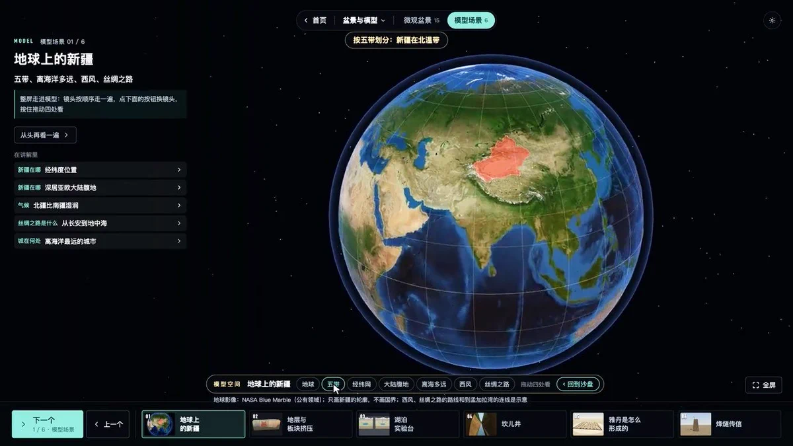

空间关系更直观
地形、地点与路线同时出现，帮助建立区域位置关系。
空间知识 / 互动教学 / 案例研究
地理搭起骨架，历史与人文沿着空间展开。
从一颗地球，到一处地形，再到一个原理模型。
基于 Moby 的演示观察 · 2026.10.09
对应 GitHub 仓库尚未找到，源码、版本与许可待确认。

展示能力有视频依据。
内容精度需要独立核对。
01 / CAPABILITIES
按主题浏览具体能力。
每项都保留证据层级。
02 / SPATIAL SCALES
切换尺度，理解各自的任务。
下图为本地研究说明图。
原片先展示新疆地图与主题入口，地球视角随后用于定位；这里是尺度能力归纳，尚未通过源码确认内部模块或数据流。
03 / MODEL EVIDENCE
影像来源、几何精度、加载方式，
需要分别判断。
模型文件格式 · 地形分辨率 · 高度夸张系数 · 实时联网或预先打包 · 原应用使用的渲染引擎
04 / VALUE
让学习者把地点、过程与解释连在一起。
是否提升学习效果，还需要实际教学验证。
地形、地点与路线同时出现，帮助建立区域位置关系。
以一个地区为线索，连接自然环境、历史事件和人类活动。
全球背景用地球，局部结构用地形，形成机制用独立模型。
05 / OPEN SOURCE
截至 2026 年 10 月 9 日，原帖没有给出仓库地址；公开检索作者账号、演示标题与相关关键词，没有找到能与该演示建立对应关系的 GitHub 仓库。这不等于证明它没有开源。
原应用的源码、tag / commit、技术栈和许可证均待确认。这里展示的是研究整理页。
以下工具与原演示的技术关系尚未确认。
06 / REFERENCES
截图证明展示内容，官方资料解释数据类型。
没有源码的部分，保留为待验证项。